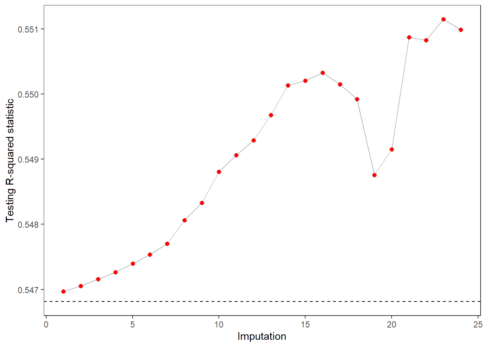

ipa
getting_started.RmdThe ipa package helps create collections of imputed datasets using a specific method. The datasets are differentiated by specific tuning parameters that correspond to the method. For example, the number of neighbors used to impute missing values is a specific parameter for nearest neighbor imputation. True to its name, ipa is based around the process of brewing a great beer. The main steps involved are
brew Create a container to hold your imputations
spice (optional) set parameters that govern the number of imputations for the given brew
mash fit models that will provide imputations
ferment impute missing values in training and (optionally) testing data
bottle output the imputed datasets in a tibble.
library(ipa)
library(magrittr)
library(recipes)
#> Loading required package: dplyr
#>
#> Attaching package: 'dplyr'
#> The following objects are masked from 'package:stats':
#>
#> filter, lag
#> The following objects are masked from 'package:base':
#>
#> intersect, setdiff, setequal, union
#>
#> Attaching package: 'recipes'
#> The following object is masked from 'package:stats':
#>
#> step
library(dplyr)
library(purrr)
#>
#> Attaching package: 'purrr'
#> The following object is masked from 'package:magrittr':
#>
#> set_names
library(ggplot2)
# random seed for reproducing these results
set.seed(329)
# simulation parameters (these are explained below)
ncov = 50
nint = 0
error_sd = 1/5
tst_miss = 0.0
trn_miss = 0.50
nobs = 100000
split_prop = 1/20
rho = 1/2
nimpute = 10As this is a simulation example, we’ll need to set a few parameters, describe the context we are simulating data for, and then generate our data. Suppose that
\(Y = X\beta + \epsilon\), where \(Y\) is a continuous outcome, \(X\) is a matrix with ncov = 50 covariates, \(\beta\) is a vector containing coefficients that correspond to each column in \(X\), and \(\epsilon\) is a random error term with standard deviation = 0.2. nint = 0 is the number of interactions between the columns in \(X\) that impact the value of \(Y\).
Columns in \(X\) follow an autoregressive correlation structure characterized by a correlation constant (rho = 0.5) such that corr\((x_i, x_j)\) = rho\(^{\left|i-j\right|}\), where \(i\) and \(j\) indicate column indices in \(X\).
We sample a proportion of these data (split_prop = 0.05) from a population of size nobs = 1e+05.
A proportion (trn_miss = 0.5) of the values in our sample are missing at random (i.e., the missing status of a given variable is related to other variables we measured).
We want to identify a strategy to handle these missing values that will optimize the accuracy of a gradient boosted decision tree ensemble, which will be constructed using xgboost.
We will test the accuracy of each xgboost model by using it to predict \(Y \mid X\) among the full population (minus the observations in our training data).
In the following code, I set the parameters described above and use gen_simdata to create a set of 50,000 observations (with 2,500 in our training sample)
sim <- gen_simdata(
problem_type = 'regression', # continuous outcome.
error_sd = error_sd, # standard deviation of error.
ncov = ncov, # number of predictors.
nint = nint, # number of interactions.
rho = rho, # autoregression constant.
nobs = nobs, # total No. of observations.
split_prop = split_prop, # proportion used to train model.
miss_pattern = 'mar', # data are missing at random.
trn_miss_prop = trn_miss, # proportion of missing training data.
tst_miss_prop = tst_miss # proportion of missing training data.
)
# save the vector of beta coefficients
betas <- sim[1]
data <- sim[2:3]
print(data)
#> $training
#> # A tibble: 5,000 x 51
#> response x1 x2 x3 x4 x5 x6 x7 x8
#> <dbl> <dbl> <dbl> <dbl> <dbl> <dbl> <dbl> <dbl> <dbl>
#> 1 -0.0898 -0.646 NA 0.491 0.492 NA NA -1.35 NA
#> 2 0.715 0.684 0.0149 1.39 NA 0.509 -0.958 NA -1.70
#> 3 0.610 -0.754 0.380 0.820 0.875 -0.216 -1.28 -2.14 -0.773
#> 4 0.358 -0.124 -0.461 0.294 NA -0.990 -0.595 NA NA
#> 5 0.137 NA 0.372 NA 0.710 NA NA -0.277 -0.304
#> 6 -0.388 -0.658 -0.205 -1.31 -1.54 -1.69 -1.24 0.493 1.03
#> 7 0.916 -0.235 -0.297 0.773 1.58 0.0585 -0.722 -1.31 -1.77
#> 8 -0.297 0.708 1.29 1.29 1.53 -0.255 0.761 0.765 -0.285
#> 9 -0.545 0.721 NA -0.810 0.101 NA NA -1.24 NA
#> 10 -0.240 NA -1.61 NA -0.0528 NA NA -0.510 -0.880
#> # ... with 4,990 more rows, and 42 more variables: x9 <dbl>, x10 <dbl>,
#> # x11 <dbl>, x12 <dbl>, x13 <dbl>, x14 <dbl>, x15 <dbl>, x16 <dbl>,
#> # x17 <dbl>, x18 <dbl>, x19 <dbl>, x20 <dbl>, x21 <dbl>, x22 <dbl>,
#> # x23 <dbl>, x24 <dbl>, x25 <dbl>, x26 <dbl>, x27 <dbl>, x28 <dbl>,
#> # x29 <dbl>, x30 <dbl>, x31 <dbl>, x32 <dbl>, x33 <dbl>, x34 <dbl>,
#> # x35 <dbl>, x36 <dbl>, x37 <dbl>, x38 <dbl>, x39 <dbl>, x40 <dbl>,
#> # x41 <dbl>, x42 <dbl>, x43 <dbl>, x44 <dbl>, x45 <dbl>, x46 <dbl>,
#> # x47 <dbl>, x48 <dbl>, x49 <dbl>, x50 <dbl>
#>
#> $testing
#> # A tibble: 95,000 x 51
#> response x1 x2 x3 x4 x5 x6 x7 x8
#> <dbl> <dbl> <dbl> <dbl> <dbl> <dbl> <dbl> <dbl> <dbl>
#> 1 -0.0879 -0.903 -1.29 -1.11 0.264 0.484 0.395 0.776 0.963
#> 2 -0.408 1.79 0.338 -0.227 0.570 -0.121 -0.479 0.328 0.368
#> 3 -0.450 -0.734 -0.835 1.03 0.316 0.647 -0.614 -0.296 -1.36
#> 4 0.414 1.24 1.69 0.886 1.37 -0.218 1.48 0.0870 0.782
#> 5 0.128 1.31 2.14 1.19 0.134 1.33 1.73 1.37 -0.201
#> 6 -0.419 -0.292 -0.505 -0.0426 0.150 -0.853 -0.961 0.0218 0.806
#> 7 0.316 -0.544 -0.188 0.227 0.496 1.54 0.963 0.215 0.0687
#> 8 0.0231 2.20 1.83 0.848 1.27 1.93 -0.175 -0.0720 0.558
#> 9 0.0744 1.12 1.72 1.70 0.582 -0.0269 0.209 -0.530 -0.848
#> 10 0.451 0.372 -1.66 0.150 0.877 0.274 -0.646 0.252 0.793
#> # ... with 94,990 more rows, and 42 more variables: x9 <dbl>, x10 <dbl>,
#> # x11 <dbl>, x12 <dbl>, x13 <dbl>, x14 <dbl>, x15 <dbl>, x16 <dbl>,
#> # x17 <dbl>, x18 <dbl>, x19 <dbl>, x20 <dbl>, x21 <dbl>, x22 <dbl>,
#> # x23 <dbl>, x24 <dbl>, x25 <dbl>, x26 <dbl>, x27 <dbl>, x28 <dbl>,
#> # x29 <dbl>, x30 <dbl>, x31 <dbl>, x32 <dbl>, x33 <dbl>, x34 <dbl>,
#> # x35 <dbl>, x36 <dbl>, x37 <dbl>, x38 <dbl>, x39 <dbl>, x40 <dbl>,
#> # x41 <dbl>, x42 <dbl>, x43 <dbl>, x44 <dbl>, x45 <dbl>, x46 <dbl>,
#> # x47 <dbl>, x48 <dbl>, x49 <dbl>, x50 <dbl>Imputation to the mean is a common strategy used to impute missing values for predictive models. We will use the performance of a linear model fitted to mean imputed data as a reference point for this example.
reci <- recipe(response ~ ., data = data$training) %>%
step_meanimpute(all_numeric()) %>%
prep()
# Model, predictions, and mean squared error
# using mean imputation (the reference approach)
mdl_ref <- lm(response ~ ., data = juice(reci))
prd_ref <- predict(mdl_ref, newdata = bake(reci, data$testing))
mse_ref <- mean((prd_ref - data$testing$response)^2)softImpute
soft imputation is a method based on singular value decomposition of a matrix. We will use the softImpute algorithm to brew a set of 20 imputed datasets with varying degrees of regularization.
When you start a brew, an object is initiated with an empty list containing meta data about your missing data strategy.
brew_sft <- data$training %>%
brew(outcome = response, flavor = 'softImpute')
brew_sft
#> A <U+0001F37A> to handle missing data using soft imputation.
#>
#> Data used for imputation (outcomes are wittheld):
#>
#> # A tibble: 5,000 x 50
#> x1 x2 x3 x4 x5 x6 x7 x8 x9
#> <dbl> <dbl> <dbl> <dbl> <dbl> <dbl> <dbl> <dbl> <dbl>
#> 1 -0.646 NA 0.491 0.492 NA NA -1.35 NA -0.259
#> 2 0.684 0.0149 1.39 NA 0.509 -0.958 NA -1.70 -0.0839
#> 3 -0.754 0.380 0.820 0.875 -0.216 -1.28 -2.14 -0.773 -0.862
#> 4 -0.124 -0.461 0.294 NA -0.990 -0.595 NA NA NA
#> 5 NA 0.372 NA 0.710 NA NA -0.277 -0.304 -0.285
#> 6 -0.658 -0.205 -1.31 -1.54 -1.69 -1.24 0.493 1.03 0.663
#> 7 -0.235 -0.297 0.773 1.58 0.0585 -0.722 -1.31 -1.77 -1.47
#> 8 0.708 1.29 1.29 1.53 -0.255 0.761 0.765 -0.285 -0.473
#> 9 0.721 NA -0.810 0.101 NA NA -1.24 NA 0.351
#> 10 NA -1.61 NA -0.0528 NA NA -0.510 -0.880 -0.394
#> # ... with 4,990 more rows, and 41 more variables: x10 <dbl>, x11 <dbl>,
#> # x12 <dbl>, x13 <dbl>, x14 <dbl>, x15 <dbl>, x16 <dbl>, x17 <dbl>,
#> # x18 <dbl>, x19 <dbl>, x20 <dbl>, x21 <dbl>, x22 <dbl>, x23 <dbl>,
#> # x24 <dbl>, x25 <dbl>, x26 <dbl>, x27 <dbl>, x28 <dbl>, x29 <dbl>,
#> # x30 <dbl>, x31 <dbl>, x32 <dbl>, x33 <dbl>, x34 <dbl>, x35 <dbl>,
#> # x36 <dbl>, x37 <dbl>, x38 <dbl>, x39 <dbl>, x40 <dbl>, x41 <dbl>,
#> # x42 <dbl>, x43 <dbl>, x44 <dbl>, x45 <dbl>, x46 <dbl>, x47 <dbl>,
#> # x48 <dbl>, x49 <dbl>, x50 <dbl>If you are going to make all these imputed datasets, you might as well make them how you like them! Spicing your brew gives you more control over how many datasets are created and the values of parameters that will be used to generate them.
Of course, different brews take different spices, and it is a little overwhelming trying to remember which spice goes where. For this reason, ipa includes helper functions spicer_soft, spicer_nbrs, and spicer_rngr to help add the correct arguments into the spice function.
brew_sft <- brew_sft %>%
spice(with = spicer_soft(n_impute = 24, step_size = 2))
# Note that I chose step_size so that n_impute * step_size < max_rank
# (spice would throw an error at me if I messed that up)
brew_sft$pars
#> $min_rank
#> [1] 1
#>
#> $max_rank
#> [1] 49
#>
#> $n_impute
#> [1] 24
#>
#> $step_size
#> [1] 2Mashing the brew corresponds to the initiation of imputation for ipa_brew objects. Inputs of the mash function include parameters that directly correspond to imputation models. Again, different models take different parameters, so we rely on the masher_soft function to help us set parameters that matter for the softImpute algorithm.
Notably, the softImpute algorithm’s convergence is influenced by parameters set in the mash function, and it is often helpful to see model fitting output printed to the screen to diagnose convergence problems. To see that output, we use the set_verbose function and make our brew a little noisier.
brew_sft <- brew_sft %>%
verbose_on(level = 1) %>%
mash(with = masher_soft(scale_lambda = 0.90))
#> Identifying max lambda and scaling by 0.9
#> Applying biScale() to data
#> Iter 1 Total Changes 441.2108
#> Iter 2 Total Changes 0.09442143
#> Iter 3 Total Changes 0.002450227
#> Iter 4 Total Changes 2.479918e-05
#> Iter 5 Total Changes 3.041207e-07
#> Iter 6 Total Changes 4.22631e-09
#> Iter 7 Total Changes 6.345478e-11
#> Fitting soft-impute models
#> fit 1 of 24: lambda = 91.050, rank.max = 7 rank.fit = 5
#> fit 2 of 24: lambda = 87.135, rank.max = 8 rank.fit = 6
#> fit 3 of 24: lambda = 83.220, rank.max = 10 rank.fit = 8
#> fit 4 of 24: lambda = 79.304, rank.max = 11 rank.fit = 9
#> fit 5 of 24: lambda = 75.389, rank.max = 12 rank.fit = 10
#> fit 6 of 24: lambda = 71.474, rank.max = 13 rank.fit = 11
#> fit 7 of 24: lambda = 67.559, rank.max = 15 rank.fit = 13
#> fit 8 of 24: lambda = 63.643, rank.max = 17 rank.fit = 15
#> fit 9 of 24: lambda = 59.728, rank.max = 18 rank.fit = 16
#> fit 10 of 24: lambda = 55.813, rank.max = 20 rank.fit = 18
#> fit 11 of 24: lambda = 51.898, rank.max = 22 rank.fit = 20
#> fit 12 of 24: lambda = 47.983, rank.max = 24 rank.fit = 22
#> fit 13 of 24: lambda = 44.067, rank.max = 26 rank.fit = 24
#> fit 14 of 24: lambda = 40.152, rank.max = 28 rank.fit = 26
#> fit 15 of 24: lambda = 36.237, rank.max = 30 rank.fit = 28
#> fit 16 of 24: lambda = 32.322, rank.max = 32 rank.fit = 30
#> fit 17 of 24: lambda = 28.407, rank.max = 34 rank.fit = 32
#> fit 18 of 24: lambda = 24.491, rank.max = 36 rank.fit = 34
#> fit 19 of 24: lambda = 20.576, rank.max = 38 rank.fit = 36
#> fit 20 of 24: lambda = 16.661, rank.max = 40 rank.fit = 38
#> fit 21 of 24: lambda = 12.746, rank.max = 42 rank.fit = 40
#> fit 22 of 24: lambda = 8.830, rank.max = 44 rank.fit = 42
#> fit 23 of 24: lambda = 4.915, rank.max = 46 rank.fit = 44
#> fit 24 of 24: lambda = 1.000, rank.max = 48 rank.fit = 46The ipa_brew object’s wort will be filled with imputation models (i.e., the column called fit) after the mash is complete!
brew_sft$wort
#> # A tibble: 24 x 4
#> impute lambda rank fit
#> <int> <dbl> <int> <list>
#> 1 1 91.1 5 <named list [3]>
#> 2 2 87.1 6 <named list [3]>
#> 3 3 83.2 8 <named list [3]>
#> 4 4 79.3 9 <named list [3]>
#> 5 5 75.4 10 <named list [3]>
#> 6 6 71.5 11 <named list [3]>
#> 7 7 67.6 13 <named list [3]>
#> 8 8 63.6 15 <named list [3]>
#> 9 9 59.7 16 <named list [3]>
#> 10 10 55.8 18 <named list [3]>
#> # ... with 14 more rowsMissing values can occur in the training data, testing data, and validation data. An important requirement for missing value strategies is that only information from the training data should be used to impute missing data.
Unfortunately, some imputation strategies are not designed to work this way! For example, softImpute imputes missing values based on the index of the missing value in the training data, and this doesn’t generalize to testing data because testing data (by definition) are not in the training data.
Fortunately, ferment gives you options. For example, you can use softImpute to impute missing training data, and then use kneighbors to impute the testing data by matching the testing observations to their nearest neighbors in the training data. More specifically, you can tell ferment to impute the testing data using either the original unimputed training data or using each of the imputed training datasets, separately. The same options apply for all ipa_brew objects.
However, in this case, there are no missing values in the testing data, so we don’t need to rely on these tricks.
The ... argument in ferment lets you supply a dataset paired with a name. The dataset you supply will get imputed, and the name you give it will appear as the column name of the imputed sets in the wort. For example,
brew_sft <- ferment(brew_sft, testing = data$testing)
#> No missing values in testing - nothing to impute.
brew_sft$wort
#> # A tibble: 24 x 6
#> impute lambda rank fit training testing
#> <int> <dbl> <int> <list> <list> <list>
#> 1 1 91.1 5 <named list [~ <tibble [5,000 x ~ <tibble [95,000 x~
#> 2 2 87.1 6 <named list [~ <tibble [5,000 x ~ <tibble [95,000 x~
#> 3 3 83.2 8 <named list [~ <tibble [5,000 x ~ <tibble [95,000 x~
#> 4 4 79.3 9 <named list [~ <tibble [5,000 x ~ <tibble [95,000 x~
#> 5 5 75.4 10 <named list [~ <tibble [5,000 x ~ <tibble [95,000 x~
#> 6 6 71.5 11 <named list [~ <tibble [5,000 x ~ <tibble [95,000 x~
#> 7 7 67.6 13 <named list [~ <tibble [5,000 x ~ <tibble [95,000 x~
#> 8 8 63.6 15 <named list [~ <tibble [5,000 x ~ <tibble [95,000 x~
#> 9 9 59.7 16 <named list [~ <tibble [5,000 x ~ <tibble [95,000 x~
#> 10 10 55.8 18 <named list [~ <tibble [5,000 x ~ <tibble [95,000 x~
#> # ... with 14 more rowsOnce everything is imputed, your brew is ready to be bottled. You can choose whether you’d prefer to get the data back in the form of a tibble or matrix.
brew_sft <- bottle(brew_sft, type = 'tibble')
brew_sft
#> # A tibble: 24 x 5
#> impute lambda rank training testing
#> <int> <dbl> <int> <list> <list>
#> 1 1 91.1 5 <tibble [5,000 x 51]> <tibble [95,000 x 51]>
#> 2 2 87.1 6 <tibble [5,000 x 51]> <tibble [95,000 x 51]>
#> 3 3 83.2 8 <tibble [5,000 x 51]> <tibble [95,000 x 51]>
#> 4 4 79.3 9 <tibble [5,000 x 51]> <tibble [95,000 x 51]>
#> 5 5 75.4 10 <tibble [5,000 x 51]> <tibble [95,000 x 51]>
#> 6 6 71.5 11 <tibble [5,000 x 51]> <tibble [95,000 x 51]>
#> 7 7 67.6 13 <tibble [5,000 x 51]> <tibble [95,000 x 51]>
#> 8 8 63.6 15 <tibble [5,000 x 51]> <tibble [95,000 x 51]>
#> 9 9 59.7 16 <tibble [5,000 x 51]> <tibble [95,000 x 51]>
#> 10 10 55.8 18 <tibble [5,000 x 51]> <tibble [95,000 x 51]>
#> # ... with 14 more rowsThe main functions in ipa_brew are designed to fit neatly with the %>% operator. We know you like to pipe while you brew.
brew_sft <- data$training %>%
brew(outcome = response, flavor = 'softImpute') %>%
verbose_on(level = 1) %>%
spice(with = spicer_soft(n_impute = 24, step_size = 2)) %>%
mash(with = masher_soft(scale_lambda = 0.90)) %>%
ferment(testing = data$testing) %>%
bottle(type = 'tibble')Now that we have our data, we can fit a linear model to each training set, and evaluate that model’s predictions using the testing data. Our main questions are
can softImpute produce a model that is more accurate than mean imputation?
What are the ideal parameters for softImpute in this case?
yhat_train <- mean(data$training$response)
mse_naive <- mean((yhat_train - data$testing$response)^2)
ggdat <- brew_sft %>%
mutate(
mse_sft = map2_dbl(training, testing,
.f = ~ lm(response ~ ., data = .x) %>%
predict(newdata = .y) %>%
subtract(data$testing$response) %>%
raise_to_power(2) %>%
mean()
)
) %>%
select(impute, mse_sft) %>%
mutate(r2_sft = 1 - mse_sft / mse_naive)Results show that all instances of softImpute have an advantage over mean imputation and that imputes 16-21 seem to provide the most accurate linear models. Using these imputed datasets rather than the reference approach (imputation to the mean) improves the testing r-squared statistic by approximately 0.014
ggplot(ggdat, aes(x = impute, y = r2_sft)) +
geom_line(col = 'grey') +
geom_point(size = 2, shape = 21, fill = 'red', col = 'grey') +
geom_hline(yintercept = 1 - mse_ref / mse_naive, linetype = 2) +
labs(x = 'Imputation', y = 'Testing R-squared statistic') +
theme_bw() +
theme(panel.grid = element_blank())